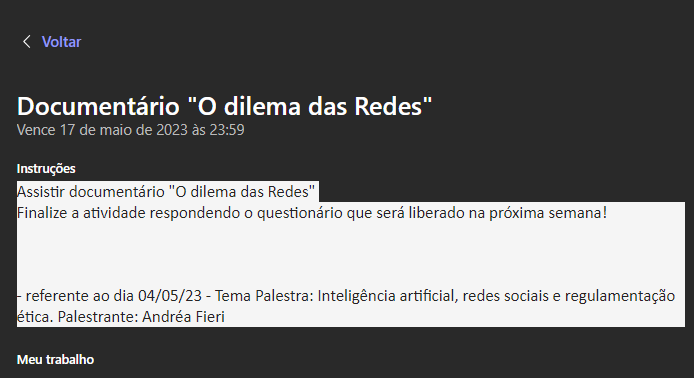
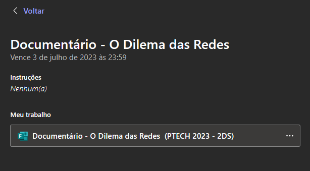
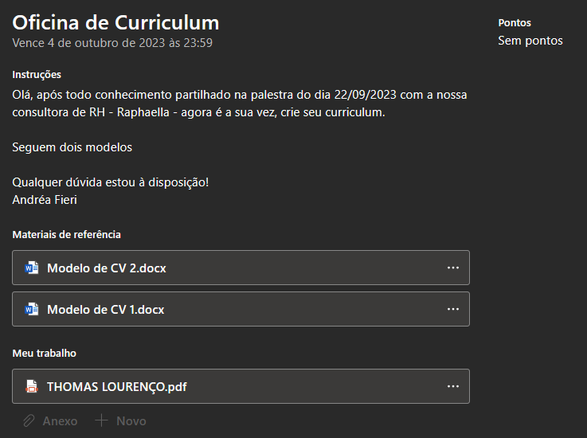

Nesta lição fizemos um mapa mental do nosso plano de carreira, assim como mostra a imagem acima.
Meu trabalho:
Na minha trajetória pretendo me desafiar e conquistar meus objetivos.
Neste documentário primeiro o assistimos e na atividade seguinte o respondemos, é um documentário da Netflix lançado em 2020 que aborda os impactos sociais, políticos e psicológicos das redes sociais e das grandes empresas de tecnologia. O documentário examina como as plataformas de mídia social, como Facebook, Twitter e Instagram, têm influenciado o comportamento humano, moldado a opinião pública e afetado a democracia.
Aqui apenas respondi o questionario que não esta mais acessível, apenas aparece um aviso de "sua resposta já foi entregue"
Fizemos nosso primeiro Curriculo com nossos objetivos!
Meu Curriculo: Abrir PDF